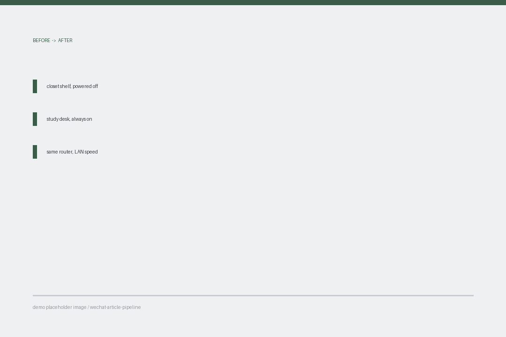
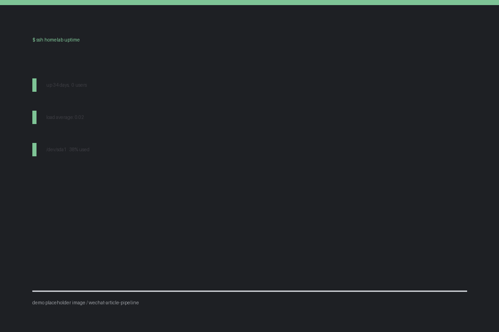

一台闲置旧笔记本，我把它变成了家里的文件中转站
家里那台 2016 年的旧笔记本，闲置了快三年。屏幕有一道竖线，电池鼓了，键盘缺一个键帽。扔了可惜，用又实在带不动 Windows。
上个月我把它擦干净，装了系统，现在它每天二十四小时开着，负责一件很小但很实用的事：接收和中转家里所有设备之间要传的文件。
为什么不用网盘
网盘当然能用。但有三个点一直让我不太舒服。
而这台旧笔记本就摆在书房，同一个路由器下面，传文件是局域网速度。

旧笔记本改造前后的位置对比
装了什么
系统选的是最小化安装，不带桌面环境，开机内存占用两百多兆。旧机器最怕的就是图形界面，去掉之后它反而比当年跑得顺。
装完之后只做了三件事：
第三步是最容易忘的。我第一天配完很满意，第二天早上发现连不上，排查半小时才想起来盖子是合着的。
一条命令看它还活着
我在主力电脑上留了个小脚本，每次想确认它还在线就跑一下：
BASH
ping -c 3 192.168.1.50 && ssh homelab "uptime && df -h /"
输出会告诉我三件事：能不能连上、已经连续运行了多久、硬盘还剩多少。

终端里查看运行状态的输出
到今天为止它连续运行了三十四天，中间没有重启过一次。
值不值得
如果你手上正好有一台闲置的旧电脑，我觉得值得。
它不需要你懂多少东西，装系统的过程现在已经很傻瓜了，真正花时间的是想清楚你要用它干什么。我一开始想做的事很多，后来砍到只剩「传文件」这一件，反而立刻就跑起来了。
那台笔记本的屏幕竖线还在。但它现在合着盖子放在书架最下层，我已经很久没打开过它了。